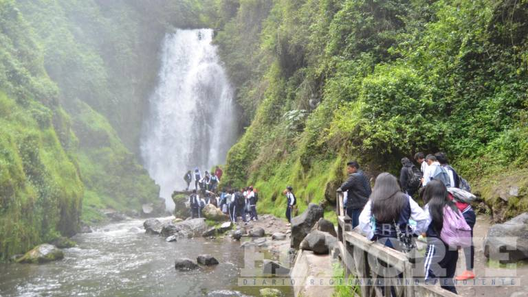
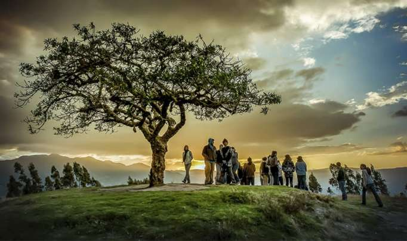

FOLKLORE MÁGICO

Buena y Mala Suerte
Se cree en la buena y la mala suerte que brinda el agua en la cascada de Peguche, es por ello que cuando nos bañamos en la parte baja de la cascada todo lo malo se va con el agua. En cambio cuando nos bañamos en la cascada (dentro del velo) representa que nos cae todo lo bueno nuevas cosas”.

El árbol del lechero
Simboliza la vida y la muerte; es un árbol medicinal que sirve para aliviar afecciones del hígado, dolor de cabeza, eliminar verrugas y calmar el dolor de oído. En este lugar se da lugar diversas manifestaciones culturales de las comunidades aledañas, quienes van a pedir fuerza, fortaleza, suerte, abundancia, es normal encontrar al pie de este árbol centenario ofrendas que han realizado con frutas, granos, flores y comida.